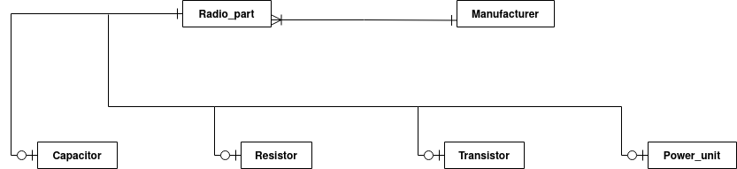
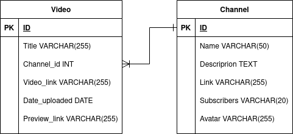
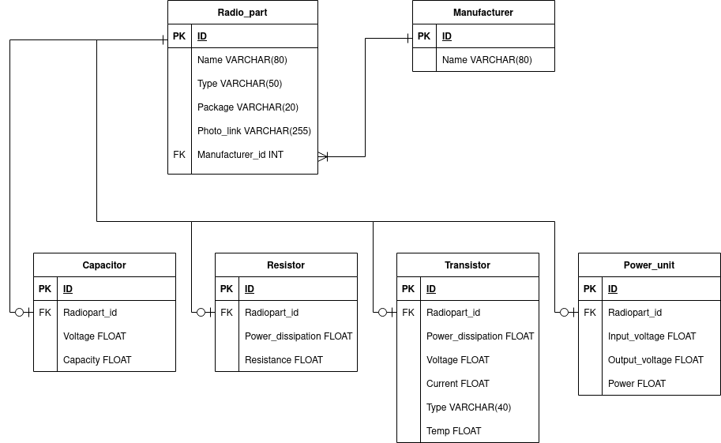

Постановка задачі лабораторної роботи №7
Тема:
Взаємодія WEB-застосувань з системою керування базами даних. Обробка результатів SQL-запитів.
Мета: Здобути практичні навички підключення до СКБД, вибору бази даних, виконання запиту, отримання результатів, відключення від СКБД.
Місце розташування лабораторних робіт
Опис об'єктів предметної галузі, які будуть в БД
Варіант 4
Завдання:
Створити базу даних для фільмотеки.
За основу бази даних взято відеотеку YouTube. БД буде мати канали, які будуть містити відео. Відео можна буде відобразити на сторінці чи переглянути за посиланням на існуюче YouTube-відео.
Варіант 7
Завдання:
Створити базу даних для довідника з радіотехніки.
В базі даних довідника з радіотехніки повинні бути такі сутності: довідник, радіодеталь. Радіодеталі можуть бути наступними: транзистор, резистор, конденсатор, блок живлення. Різні радіодеталі повинні мати зв'язок з сутністю радіодеталі. Таким чином буде реалізоване наслідування. Також БД матиме сутність виробника радіодеталей, яка матиме зв'язок з редіодеталлю.
Інфологічна модель. Опис моделі
Варіант 4Варіант 7

Датологічна модель. Опис моделі. Зв'язки між таблицями
Варіант 4
Варіант 7
Реалізація БД
Варіант 4Варіант 7
Введення даних в БД і виведення заних із БД. Пошук даних в БД
Варіант 4Варіант 7
Висновки
В процесі виконання роботи було досягнуто поставленої мети: здобуто практичні навички підключення до СКБД, вибору бази даних, виконання запитів, отримання результатів, відключення від СКБД.